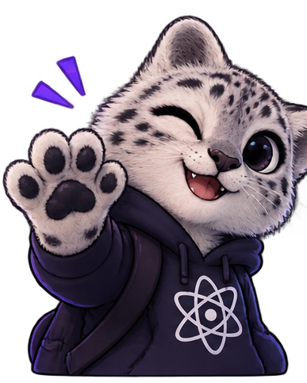
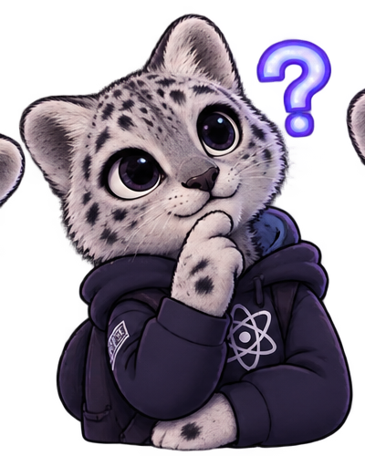
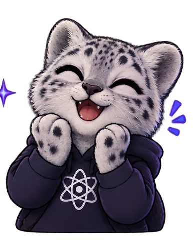

Открой науку.
Исследуй город.
Пять первых точек маршрута уже ждут тебя.

Исследователь!
Как будем играть?
Научные точки
Загадка дня

Подумай, прежде чем открыть ответ.
Научные места
Великий Новгород · выбери точку и начни исследование
Собери свой маршрут
Отметь только те места, куда хочешь пойти. Приложение подберёт порядок остановок по пешеходным расстояниям.
Пока ничего не выбрано. Отметь места в каталоге.
Точки маршрута
Твой маршрут
Исследуй город в своём темпе. Каждая точка — новое открытие.

Выбери точку на карте или начни рекомендованный маршрут.
От истории к технологиям
5 научных остановок · ориентировочно 2–3 часа
Открытые объекты
Кто быстрее?
Собери команду и пройди научный маршрут на время.
Командная игра
Как проходит игра
Одновременный стартОрганизатор запускает общий таймер.
Пять научных точекКоманды смотрят истории и выполняют задания.
Финиш и результатФиксируется время прибытия и финального ответа.
Награды
Каждое открытие приближает тебя к званию легенды науки.
Начинающий исследователь · уровень 1
Достижения
Профиль
Твоя личная история научных открытий.